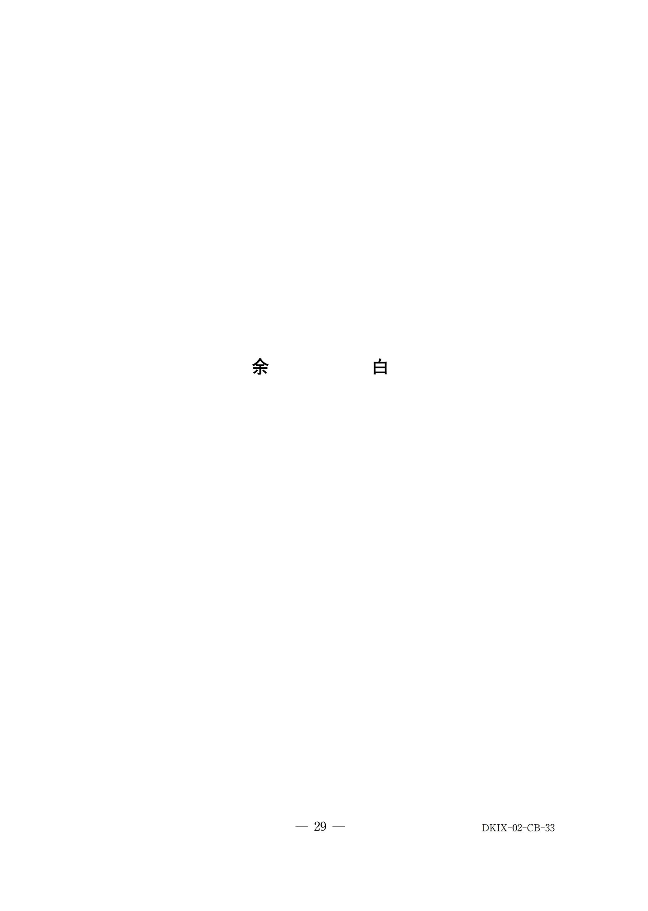
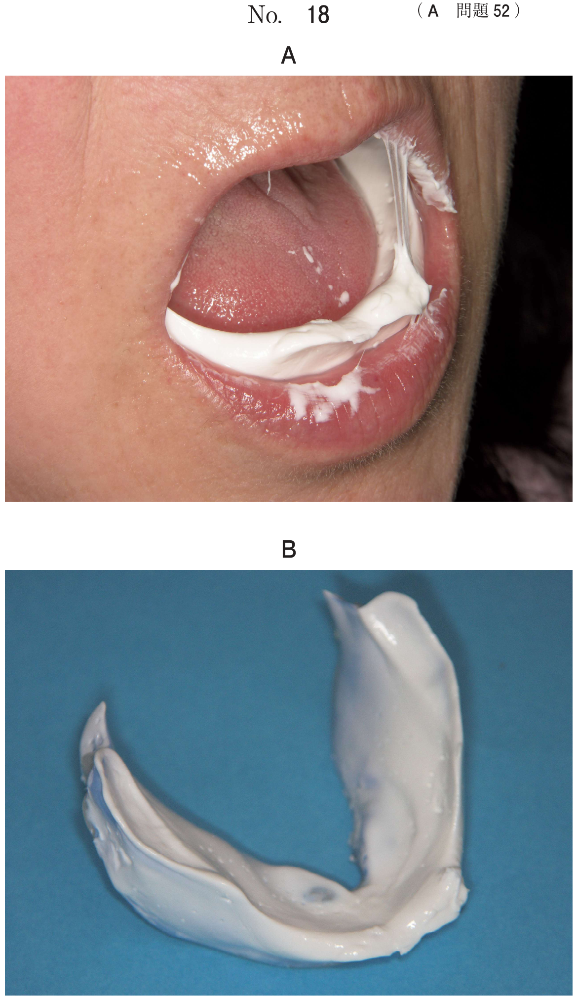

歯の脱落（完全脱臼）
脱落歯の保存（頻出）
脱落歯の対応（保護者への指示）
- 牛乳に漬ける（最適な保存液）
- 早く来院する（30分以内が理想）
- 生理食塩水、歯の保存液も可
- 口腔内保存（頬粘膜と歯の間）も可
不適切な対応
- 石けん水で洗う：歯根膜細胞を傷つける
- 歯ブラシで砂を落とす：歯根膜を損傷
- 水道水に長時間浸ける：浸透圧で細胞死
再植の予後に影響する因子（頻出）
- 再植までの時間（30分以内が理想）
- 脱落歯の保存状態（歯根膜の生存）
- 歯根の形成量（根未完成歯は予後良好）
- 歯槽骨の損傷程度
- 隣在歯の有無（固定源）
再植後の処置
固定期間中の処置
| 歯の状態 | 処置 |
|---|---|
| 根未完成歯 | 根管治療（アペキシフィケーション） |
| 根完成歯 | 根管治療 |
再植後は歯髄壊死が生じるため、固定期間中に根管治療を開始
再植後の合併症
- 骨性癒着（アンキローシス）：最も生じやすい
- 歯根吸収（炎症性・置換性）
- 歯髄壊死
乳歯の完全脱臼
原則として再植しない（後継永久歯への影響リスク）
過去問
107D51
8歳の男児の母親から学校で前歯が抜けたとの電話連絡があった。口腔内写真（別冊No.51）を別に示す。母親への指示として適切なのはどれか。2つ選べ。

a 牛乳に漬ける。
b 早く来院する。
c 石けん水で洗う。
d 歯茎に歯をもどす。
e 歯ブラシで砂を落とす。
b 早く来院する。
c 石けん水で洗う。
d 歯茎に歯をもどす。
e 歯ブラシで砂を落とす。
正解：a, b
【解説】脱落歯は牛乳に漬けて、早く来院するよう指示。石けん水や歯ブラシは歯根膜を傷つける。歯茎に戻すのは小児では困難で、誤飲リスクもある。
112A57
完全脱臼した永久歯の再植で予後に影響するのはどれか。すべて選べ。
a 歯根の形成量
b 隣在歯の有無
c 再植までの時間
d 歯槽骨の損傷程度
e 脱落歯の保存状態
b 隣在歯の有無
c 再植までの時間
d 歯槽骨の損傷程度
e 脱落歯の保存状態
正解：a, b, c, d, e
【解説】再植の予後にはすべて影響する。特に再植までの時間と脱落歯の保存状態（歯根膜細胞の生存）が重要。根未完成歯は再血行化の可能性がある。
111C82
8歳の男児。上顎左側中切歯の脱落を主訴として来院した。30分前にサッカーで└1を受傷し、脱落した歯を牛乳に入れて持参した。再植と暫間固定を行った。初診時の口腔内写真（別冊No.27A）と処置後の口腔内写真（別冊No.27B）を別に示す。固定期間中に行うのはどれか。1つ選べ。

a 漂 白
b 歯髄鎮痛消炎療法
c 生活断髄
d アペキソゲネーシス
e 根管治療
b 歯髄鎮痛消炎療法
c 生活断髄
d アペキソゲネーシス
e 根管治療
正解：e
【解説】再植後は歯髄壊死が生じるため、固定期間中に根管治療を開始する。8歳の中切歯は根未完成のため、アペキシフィケーションとして水酸化カルシウムを用いた根管治療を行う。
115A85
10歳の男児。経過観察で来院した。3か月前に上顎右側中切歯の完全脱臼に対する再植を行った。初診時（3か月前）と現在のエックス線画像（別冊No.29）を別に示す。今後生じる可能性が高いのはどれか。1つ選べ。

a 骨性癒着
b 内部吸収
c 歯髄腔の狭窄
d 歯髄の石灰変性
e セメント質の肥厚
b 内部吸収
c 歯髄腔の狭窄
d 歯髄の石灰変性
e セメント質の肥厚
正解：a
【解説】再植後に最も生じやすい合併症は骨性癒着（アンキローシス）。X線で歯根膜腔の消失、打診音の金属音で診断される。歯髄はすでに壊死しているため歯髄腔狭窄は生じない。